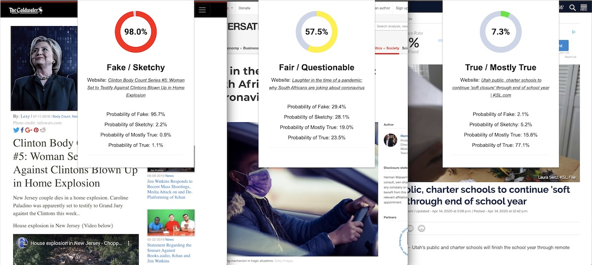

Senior Project

To be honest, I've worried about doing a senior project since I started college. I often heard about amazing, creative projects that students have done in the past. I wanted to make something cool, but my mind always came up blank.
Leading up to the last semester of my Senior year, I finally came up with an idea. What if I could develop a browser extension that detected any news-based website to be real or fake?
 ScreenshotTurns out, that's exactly what I did. It's certainly not perfect but it's a start. A combination of Python, Javascript, HTML, CSS, and Machine Learning made this possible by taking a couple of data sets each containing over 1 thousand real and fake news articles to be crawled, scraped, stripped, stemmed down to the bare text.
Once the data was prepared, each article was organized and sent to a database containing a corresponding URL, its stemmed words, and a score of 1-4 ranging from False, Sketchy, Mostly True, and True.
Next was training the data using built-in Python libraries like SciKit-learn. This library used a variety of training models to test with such as MLPClassifier, SVC, and LogisticRegression. Typically, these models gave pretty good percentages. Well, at least better than a coin toss!
Taking these percentages finally meant that I could put this into a little browser extension window to display the final score to determine whether or not it was deemed real or fake.
This enabled a user to go to any news-based website and wait for the browser extension to collect all data from the page and prepare the data mentioned earlier to run against the trained models I had made to determine a score.